|
上海图文日记2006
2006年8月10日
今天早上6点多就起来了，到上海的第二次嘿。
沿着苏州河一直走到火车站，三个多小时就拍了200多张。这里是上海最老的城区，也是我非常熟悉和喜欢的市民生活。我想我可能住错了地方，不应该住在远离市区的锦江乐园，应该在弄堂里找个地方住。不过，弄堂里的卫生环境也够恐怖的。
上海这20多天，身体状况一直不好，眼睛如熊猫一样黑，此处不是我的福地。不但丢了相机，不知道是自己太老了还是怎么了，老是忘事，很重要的事。从长沙出来居然忘记带快门线这个最重要的风光摄影附件。昨天出门再次拍摄外滩，到人民广场才发现三角架的快装板没有带，三角架没有快装板和废铁有什么区别？我要抓狂了。
再次上和平饭店失败。所有面对黄浦江的宴会厅都客满，不可以进去拍照。沮丧。只好来到外滩。老实说我是一位非常尽职的摄影师，为了搞一张图片我是敢上刀山下火海的，但是我现在总结一句话：谁让我再去拍摄外滩我就和谁急。我要晕倒。太多人了，太多人了。外滩全是人头。难怪上海最优秀的居民之一范大官人要移民加拿大，按他的说法，上海已经群魔乱舞了。
中午休息。下午上金茂大厦，在上海341米的天空一直呆到晚上8点才下来。然后和merly在地铁站碰头。我要非常感谢merly小妹，她上了一天班已经精疲力尽，我还深更半夜的来她家采访打扰。我没有办法了，
很快就要离开上海。
8 Aug 2006
For the 2nd time in shanghai i got up at 6am,
walked along the suzhou creek all the way to shanghai railway station. I
got over 200 shots in 3 hours from this morning walk. The suzhou creek
area is where the giant shanghai city was originated. I simply love this
place. Forget the skyscrapers, the concrete forest is the same
everywhere on this planet earth, New York, Tokyo or Shanghai. It is the
life of the people that really interests me.
I may have made a wrong choice staying at Jinjiang
Park, i should have stayed in an alley family inn, but the hygiene
condition was a little terrible there...
I did not sleep well during my 3 week stay in
shanghai. shanghai is not my place. My spare camera was stolen, and i am
a little crazy about myself now. am i getting too old? Cable release,
the single most important camera accessory, was left at changsha home.
Yesterday i scheduled to shoot the Bund again. When i arrived at People
Square, i suddenly found i have the tripod with me but no quick release.
A tripod without quick release is just a piece of junk.
Failed shooting the Bund from the balcony of the
Peace Hotel. i was little crazy about the Bund now. By all means i am
photographer of professionalism but I swear I will NEVER shoot the Bund
again. There are simply too many people, pusing over each other. No
wonder many elite shanghai residents including my NUS course mate Fan
are fleeting this city.
5 - 8pm I was at the observatory of Jinmao Tower,
341 meters high in the sky.
9-11pm i was visiting Merly. I really have to bid
my big THANK YOU to you Merly, I knew you were very tired after a hard
working day.
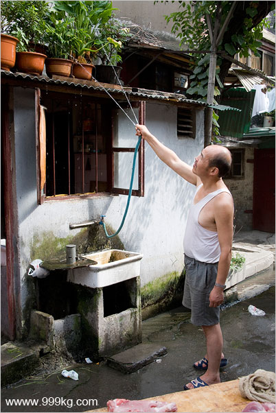
Watering flowers. Suzhou creek walk. Photo ID:
shanghai810A
早上浇花。早上苏州河边。图片号：shanghai810A
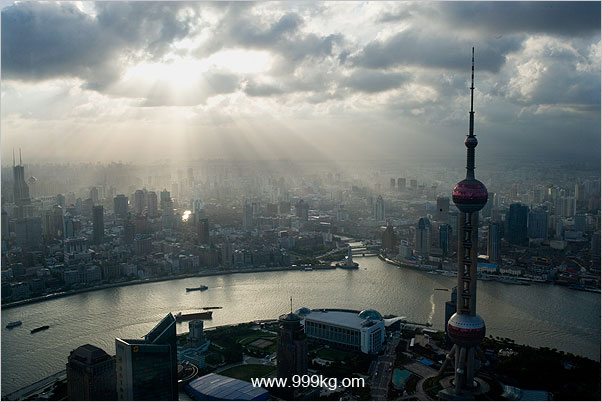
Shanghai, a view from Jin-mao Tower. Photo ID:
shanghai810B
金茂大厦看上海。图片号：shanghai810B
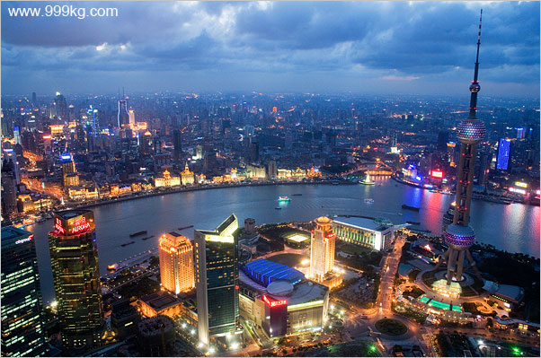
Shanghai, a view from Jin-mao Tower. Photo ID:
shanghai810C
金茂大厦看上海。图片号：shanghai810C
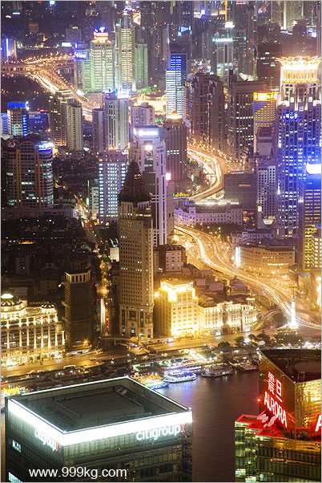
Shanghai, a view from Jin-mao Tower. Photo ID:
shanghai810D
金茂大厦看上海。图片号：shanghai810D
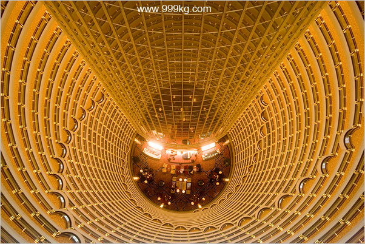
Grant Hyatt Shanghai, world highest hotel. Photo
ID: shanghai810E
世界最高的金茂大厦凯悦酒店。图片号：shanghai810E
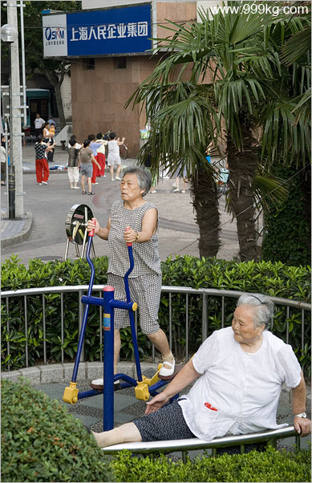
苏州河边晨练的老人。照片号：shanghai810F.
lady morning exercises by the Suzhou creek. Photo
ID: shanghai810F.
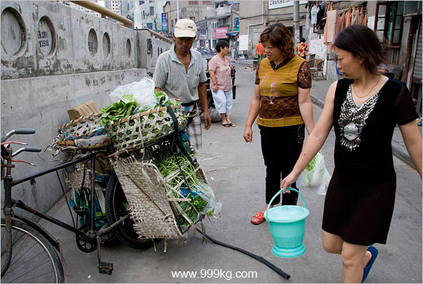
上海苏州河边弄堂的早上。图片编号：shanghai808G.
Morning @ suzhou creek, shanghai. Photo ID:
shanghai808G.
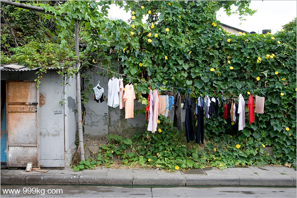
上海苏州河边。图片编号：shanghai808H.
shanghai，by the suzhou creek. Photo ID:
shanghai808H.
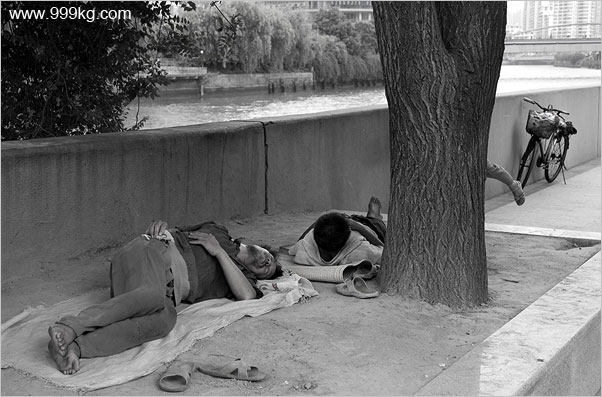
上海苏州河边。大树后面的人在干啥？图片编号：shanghai808H.
shanghai，by the suzhou creek. Photo ID:
shanghai808H.
guess the body behind the tree?
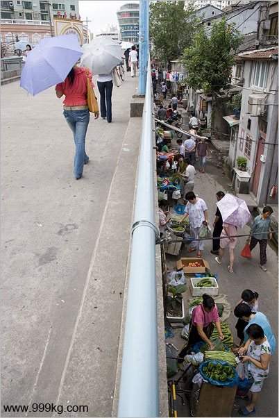
上海苏州河大桥下。图片编号：shanghai808I.
the Suzhou creek bridge. Photo ID: shanghai808I.
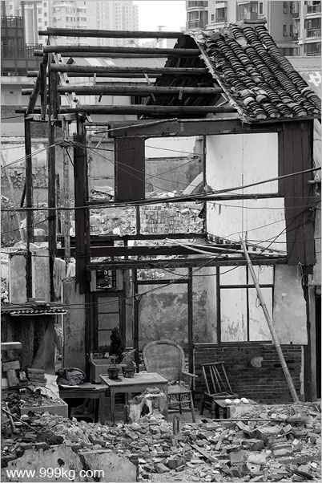
上海苏州河大桥下。图片编号：shanghai808J.
by the Suzhou creek bridge. Photo ID:
shanghai808J.
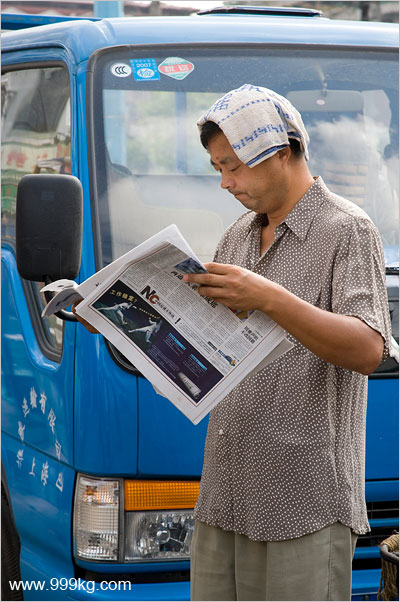
上海苏州河大桥下卡车司机。图片编号：shanghai808k.
the Suzhou creek bridge track driver. Photo ID:
shanghai808k.
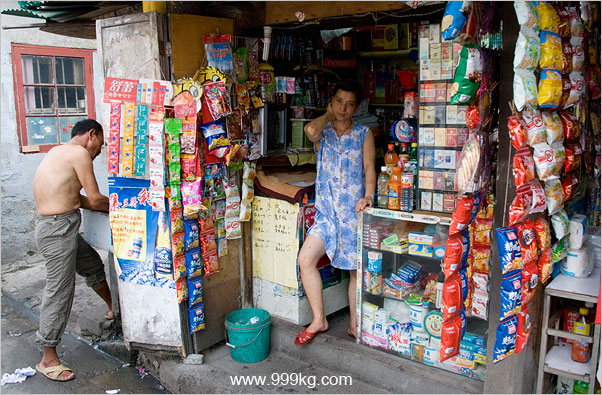
上海苏州河边弄堂的早上。图片编号：shanghai808L.
Morning @ suzhou creek, shanghai. Photo ID:
shanghai808L.
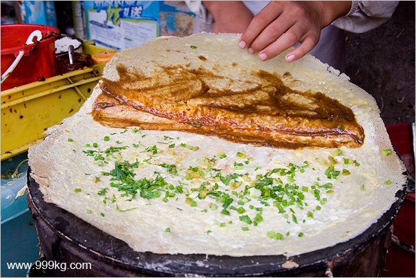
山东煎饼。上海苏州河边弄堂的早上。图片编号：shanghai808M.
Shandong pan cake, Morning @ suzhou creek,
shanghai. Photo ID: shanghai808M.
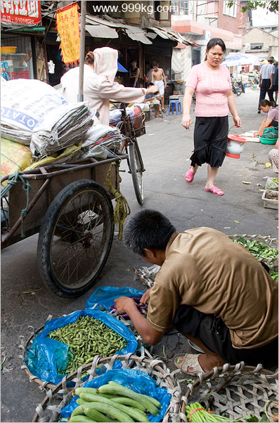
上海苏州河边弄堂的早上。图片编号：shanghai808Ｎ.
Morning @ suzhou creek, shanghai. Photo ID:
shanghai808Ｎ.
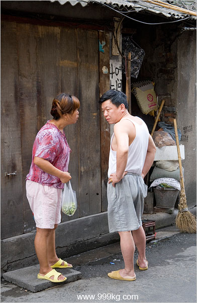
上海苏州河边弄堂的早上。图片编号：shanghai808Ｏ.
Morning @ suzhou creek, shanghai. Photo ID:
shanghai808Ｏ.
|